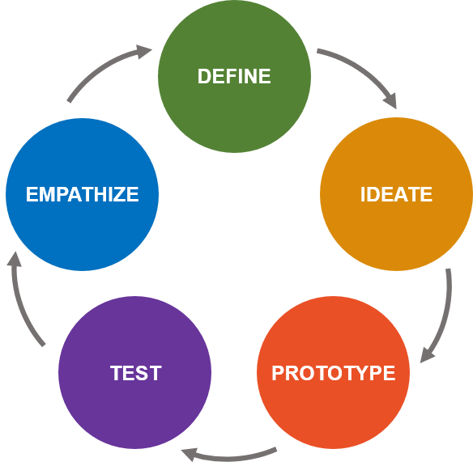

01 — Conceito
O que é Design Thinking?
Design Thinking é uma abordagem focada no ser humano que busca resolver problemas por meio da observação, do engajamento e da imersão no contexto do usuário. Em vez de considerar apenas o produto final, a metodologia coloca as necessidades e os desejos das pessoas no centro do desenvolvimento. Ao longo do processo, a equipe explora possibilidades, valida ideias e identifica oportunidades antes da implementação. Dessa forma, é possível reduzir riscos e criar soluções mais relevantes, funcionais e adequadas à vida cotidiana e à indústria.

02 — Etapas
Módulos do processo
-
Empatia
Conhecer o usuário por meio da observação, do diálogo e da imersão em sua realidade.
-
Definição do problema
Organizar os aprendizados e delimitar a necessidade que a solução deverá atender.
-
Ideação
Explorar possibilidades e propor diferentes ideias para resolver o problema identificado.
-
Prototipação
Criar uma versão simples da solução para tornar a ideia concreta e facilitar sua avaliação.
-
Teste
Coletar feedback dos usuários, identificar melhorias e aperfeiçoar a proposta.